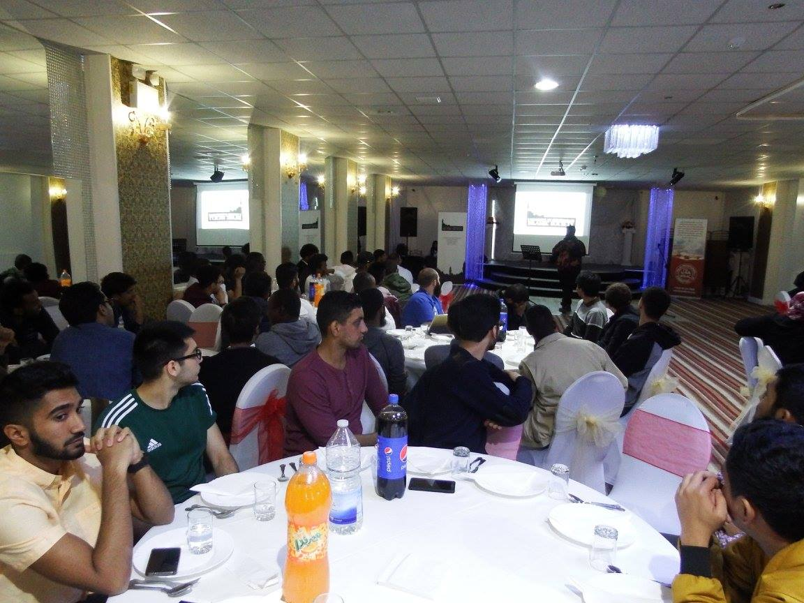
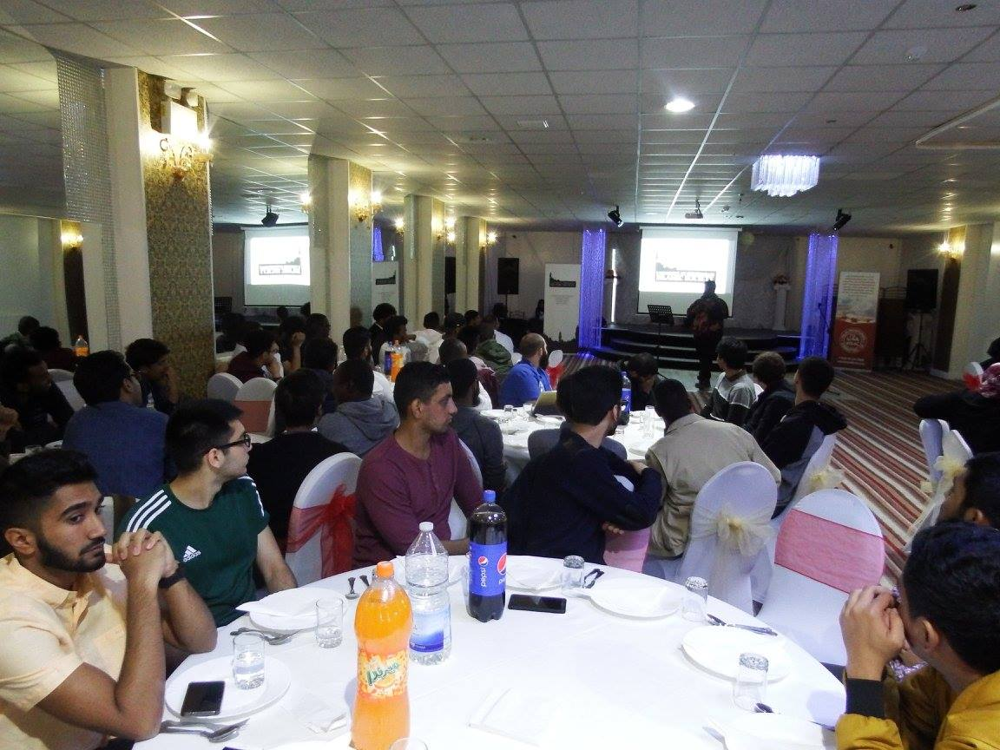
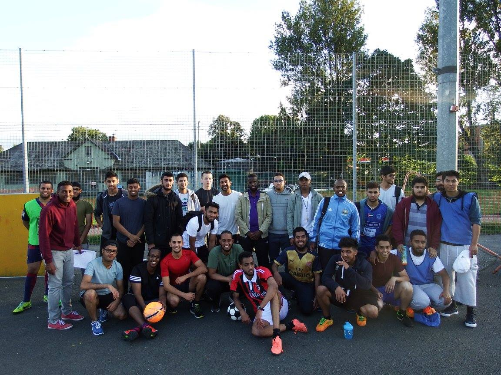
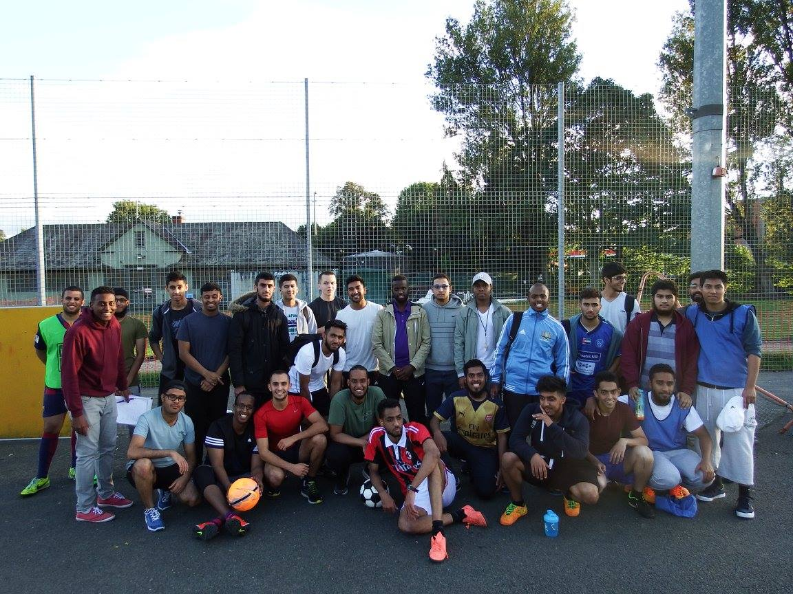

The University of Birmingham Islamic Society Alumni Network
"Connecting the Islamic Society Alumni to the current Muslim students to inspire excellence in this world and the hereafter."
What is the UBISOC Alumni Network?
The University of Birmingham Islamic Society Network is a group of Muslim graduates from the University of Birmingham who have gone on to assume influential roles in the community as professionals in their field. The group are united by their desire to ensure the long term growth of the Muslim community in Birmingham and the UK.
What potential does the network have?
Looking back at the history of UBISOC, so many people have passed through and gone on to reach heights of excellence, yet many of them never kept in contact with their peers from their University days. By bringing this lineage of professionals and leaders back together, there is huge potential for collaboration across Muslim civil society to more efficiently facilitate the growth and refinement of Muslim Community infrastructure in the UK.
An Alumni Network has the potential to become a waqf (Islamic trust) which builds wealth via a variety of projects over many years, and young Muslim talent can be fast tracked, nurtured and guided by elders from amongst the Alumni to enter positions in the community where they can be of maximum benefit to the Muslim community and wider society. The zeal and energy of youth can be focused by the wisdom of elders towards causes that are truly beneficial.
If you're interested in joining the University of Birmingham Islamic Society Alumni Network, head over to our membership page which will detail exactly what benefits you'll get as well as how to sign up. The link is below:
Potential Projects
Muslim Chaplain
The University of Birmingham currently does not have a full time paid Muslim Chaplain. This has resulted in a significant shortfall in the support Muslim students receive at the University. With over 4000 Muslim students, the University of Birmingham is one institution which could hugely benefit from such a person. Unfortunately, the University do not provide funding for the salary of any faith Chaplain. Therefore, a potential project of the Alumni Network is to be able to raise the money to fund a Muslim Chaplain selected by the Islamic Society and the Alumni Network. This would have a tremendous effect on the students at the University and would provide a stable, reliable and trusted individual for both the Islamic Society and the University to interact with and represent the Muslim students on campus.
Alumni Network Membership
A membership scheme where registered members of the Alumni Network receive exclusive invitations to reunion events, exclusive Alumni merchandise and regular newsletters updating them on the progress of the Islamic Society. A way to give back to the Islamic Society which facilitated a huge part of their student life and growth as well as keeping in touch with how the Islamic Society is functioning.
Mentoring
One potential initiative could be to provide a way for current students and graduates and established professionals in particular fields to meet each other. Furthermore, the established professionals could offer personalised help and advice to students and graduates about how to best go about building their careers bearing in mind the challenges they will face as Muslims.
Scholarships
Scholarships is one way which the financial ability of the Alumni Network can be harnessed to really help those in need. With the funds which the Alumni can provide, the Alumni Network can set up scholarships for both Muslim students in financial difficulty as well as students who are excelling in their studies. Through these scholarships, we can give students like these the ability to study at an excellent university and inspire these students to become leaders of their Muslim communities.
University of Birmingham Islamic Society Alumni Housing Association
The idea of creating a Housing Association is probably the longest term project in this list. This project is deeply rooted in the idea that the creation of the UBISOC Alumni Network is an opportunity to create a waqf (Islamic trust) which creates wealth and is an establishment which the Muslim community can rely on for years to come. To create that waqf, we need to invest the money we raise into areas which will help both generate more wealth and actually benefit the Muslim community as well. By creating a Housing Association, where the Alumni Network owns actual properties in the areas surrounding the University, we can both provide Muslim students with safe, comfortable and stress free housing while also building the wealth of the organisation.
If you have any questions about the Alumni Network please email
- Aaquib Naved (headbrother@ubisoc.co.uk)
- Munibah Saleem (alumni@ubisoc.co.uk)
 


 
